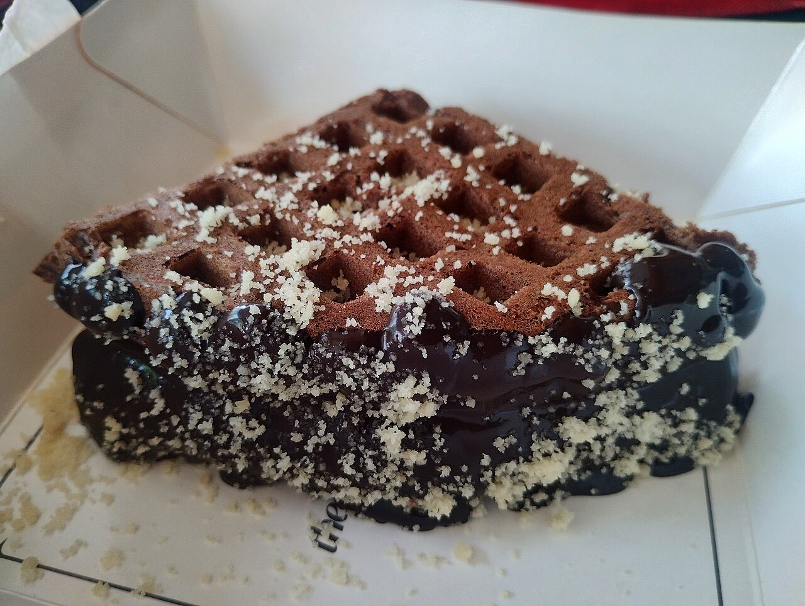
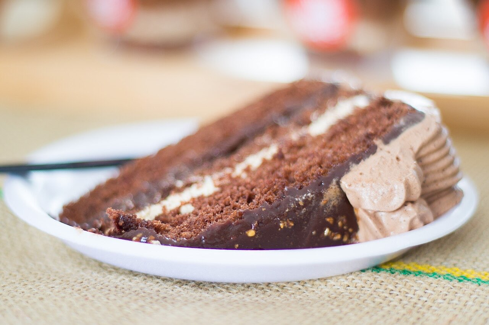
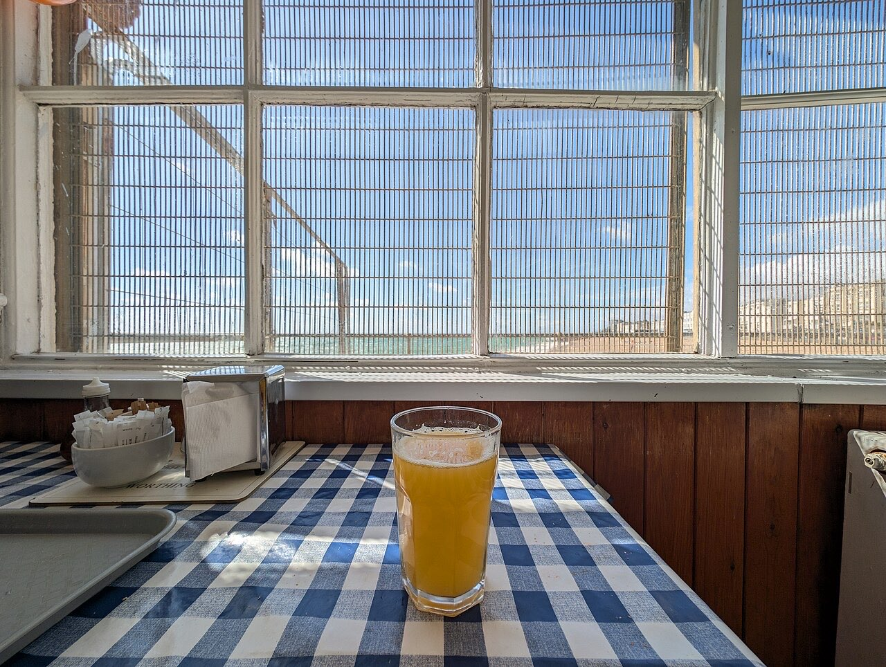

Snack-bar / pastelaria · Brito
Um refúgio doce em Brito
4,7★ em 104 avaliações no Google.
Do salgado ao doce, para um lanche ou uma pausa com amigos.
Em Brito. Veja como chegar ou contacte por WhatsApp.
O Doce Refúgio é um snack-bar e pastelaria na Rua São João Baptista, em Brito. Comida ligeira, bolos e bebidas para uma pausa à vontade.



Fotografias ilustrativas — no site final usamos as vossas.
Encomenda
Diga o que precisa e quando quer levantar (ou receber). Respondemos por WhatsApp.
↑ Assim chegaria a mensagem ao vosso WhatsApp. (Nesta demonstração nada é enviado.)
Onde estamos
Proposta para Doce Refúgio - Food, Cakes & Drinks
Esta página foi feita de propósito para Doce Refúgio - Food, Cakes & Drinks por João Machado, programador web aqui de Guimarães. Inclui:
Eu trato do alojamento e da manutenção. Sem compromisso.